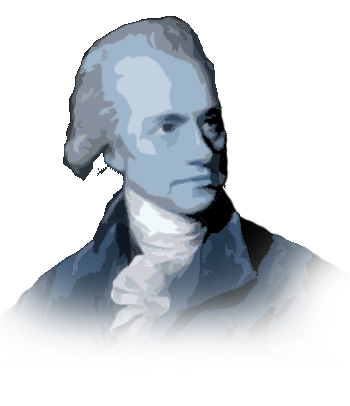
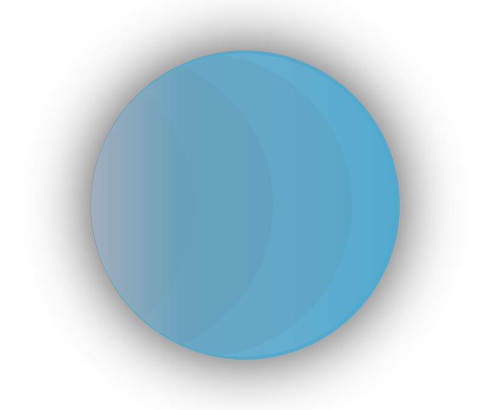
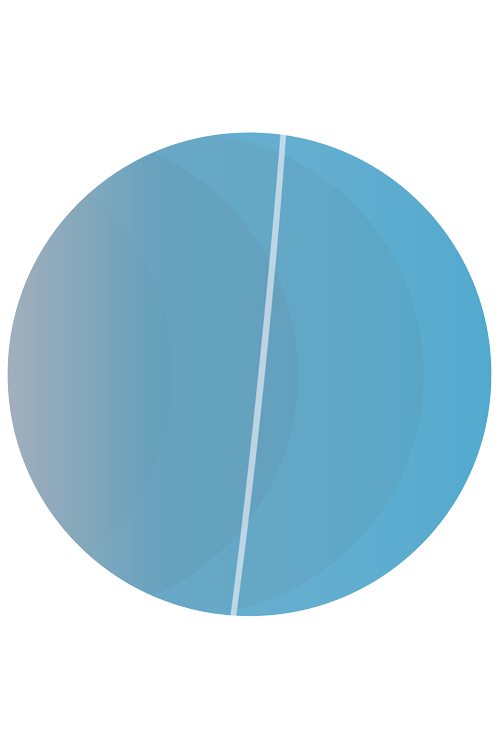
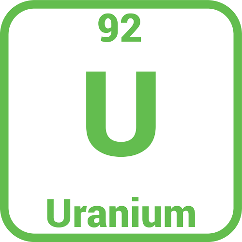
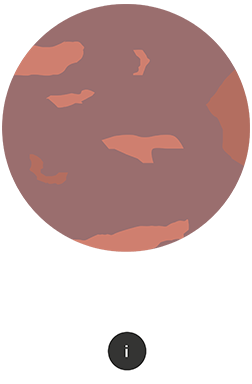
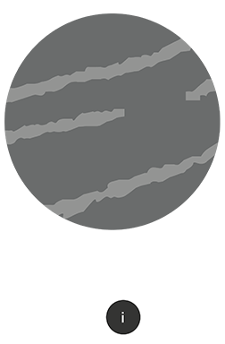
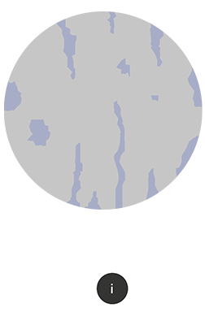
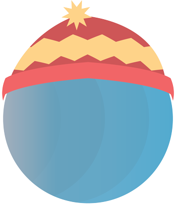

William Herschel discovered Uranus in 1781 and wanted to
call it "Georgium Sidis" after King George III.

Uranus spins the opposite direction to Earth.
Uranus is known as the ice giant because it
is the largest ice planet in the solar system.


Uranus is tilted on its side compared to other planets
Uranus's atmosphere contains hydrogen , helium, ammonia and methane.
Not many people know, but Uranus has rings made of ice.

Uranium is named after Uranus. Uranus does not contain Uranium.

Uranus moons are named after Alexander Pope
and William Shakespeare characters.



Uranus is the coldest planet in the solar system.
